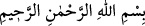
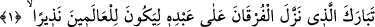
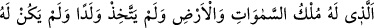
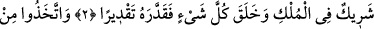
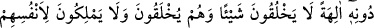
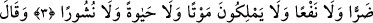
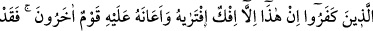
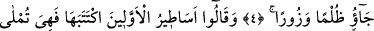
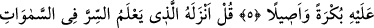
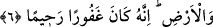

ÂLEMLERE UYARICI OLSUN DİYE
ALLAH FURKAN’I İNDİRDİ
Rahmân ve Rahîm olan Allah’ın adıyla.
1. Âlemlere uyarıcı olsun diye kuluna Furkân’ı indiren Allah, yüceler yücesidir.
2. Göklerin ve yerin mülkü O’nundur. O bir çocuk edinmemiştir, mülkünde ortağı
yoktur. Her şeyi yaratmış, ona ölçü, biçim ve düzen vermiştir.
3. (Müşrikler) O’nu (Allah’ı) bırakıp hiçbir şey yaratamayan, bilakis kendileri
yaratılmış olan, kendilerine bile ne zarar ne de fayda verebilen, öldürmeye, hayat
vermeye ve ölüleri yeniden diriltip kabirden çıkarmaya güçleri yetmeyen ilâhlar
edindiler.
4. İnkâr edenler: Bu (Kur’an), olsa olsa onun (Muhammed’in) uydurduğu bir
yalandır. Başka bir zümre de bu hususta kendisine yardım etmiştir, dediler. Böylece
onlar hiç şüphesiz haksızlığa ve iftirâya başvurmuşlardır.
5. Yine onlar dediler ki: (Bu âyetler), onun, başkasına yazdırıp da kendisine
sabah-akşam okunmakta olan, öncekilere âid masallardır.
6. (Rasûlüm!) De ki: Onu göklerde ve yerdeki gizlilikleri bilen Allah indirdi.
Şüphesiz O, çok bağışlayıcıdır, engin merhamet sâhibidir.
Kur’ân’ın indiriliş amacı olan “Âlemlere uyarıcı olsun diye” yâni Kur’ân ile kendi
dönemindeki ve sonraki asırlardaki insan ve cinleri uyarıcı, Allah’ın azâbından ve
öfkesini gerektiren şeylerden korkutucu olsun diye en hâlis “kuluna” en samîmî kul, en